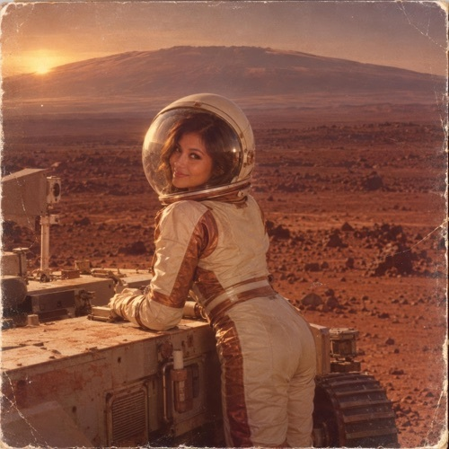

No. 020
The Marstastic Odyssey to Mount Olymp
31. October 2026
Decent Rock Glam Opener
9 tracks by Entroversu. Created in Switzerland as part of the 300 albums · 300 genres project.
Tracklist
- Give My Parking Space AwayISRC QTA892637375
- A Million Miles From The NeighboursISRC QTA892637376
- I've Never Seen So Much NothingISRC QTA892637377
- A Planet Stuck To My BootsISRC QTA892637378
- See Who Lives Here NowISRC QTA892637379
- Road To Mount OlympISRC QTA892637380
- Save Some Breath For The BraggingISRC QTA892637381
- You've Got My Full AttentionISRC QTA892637382
- The Marstastic Odyssey To Mount OlympISRC QTA892637383